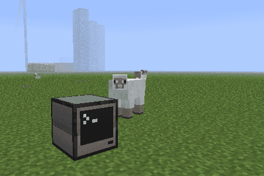
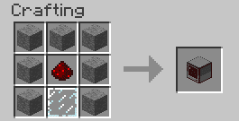

Vi begynner med å bygge en enkel datamaskin. Etter å ha brukt litt tid
på å bli kjent med hvordan datamaskinen virker, bruker vi den til å
låse opp en dør ved hjelp av passord.

Steg 1: Vår første datamaskin
Vi begynner med å lage en datamaskin.
I utgangspunktet er det mye enklere å starte i Creative Mode når vi
skal lære å bruke datamaskinene, siden vi da slipper å bruke tid på å
samle materiale og slåss mot monstre. Vi vil derfor i fortsettelsen
anta at du er i Creative Mode, og kan plukke akkurat det du trenger
i inventory'et ditt.
Men først, for å vise at en datamaskin kan bygges på vanlig måte i
Minecraft:
Sjekkliste

I Creative Mode kan du også få tak i datamaskiner ved å trykke E,
deretter klikke > for å gå til neste side, og til slutt velge fanen
med datamaskinsymbolet.
ComputerCraft datamaskiner
Høyreklikk en datamaskin for å starte den opp. Den vil åpne en svart
skjerm med teksten CraftOS på toppen. Dette er
datamaskinens kommandolinje, og vi vil bruke den til å styre
datamaskinen med.
Sjekkliste
Du får nå se noen tips om hvordan du kan finne ut mer om
datamaskinen. For eksempel kan du skrive programs for å se en
liste over hvilke programmer som er på datamaskinen, eller help programming for å få noen tips til hvordan man programmerer
datamaskinen.
Mange av disse programmene er enkle programmer som lar deg undersøke
datamaskinen nærmere. Vi vil se på noen av dem i en senere leksjon.
Steg 2: Vårt første program
Det er nå på tide at vi skriver vårt første program.
Det er en lang tradisjon blant programmerere at det første programmet
de lager når de lærer et nytt språk skriver en trivelig melding til
skjermen. Vi følger den tradisjonen og begynner med et program som
heter heiverden.
Sjekkliste
print('Hei verden!')
Etter at du har skrevet dette så trykker du på Ctrl-tasten og
velger Save. Deretter trykker du Ctrl en gang til og velger
Exit.
Prøv selv
Klarer du å endre på programmet slik at det for eksempel sier hei til
deg, eller kanskje til de som sitter ved siden av deg?
Prøv å skriv edit heiverden en gang til. Da åpner programmet ditt
seg igjen, og du kan endre på det slik at det sier noe annet. Som
tidligere må du bruke Ctrl-tasten for å gå til menyen slik at du kan
lagre og avslutte endringene.
Steg 3: Litt enkel matematikk
Vi skal nå bruke datamaskinen til å regne litt matematikk for oss, og
kanskje til og med få den til å se hvor flinke vi er til å regne.
Datamaskinene i ComputerCraft bruker et programmeringsspråk som heter
Lua. Dette er et ganske enkelt og fleksibelt språk som ofte brukes
inne i andre programmer. For eksempel kan også deler av Photoshop,
Wikipedia og World of Warcraft programmeres med Lua.
Lua
Lua ble opprinnelig laget i Brasil på begynnelsen av 1990-tallet. På
universitetet i Rio de Janeiro brukte de tidligere et språk som het
Simple Object Language (SOL). Ordet lua er portugisisk og betyr
måne, noe de syntes var et fint navn som passet sammen med SOL.
Sjekkliste
Vi skal nå prøve å skrive noen kommandoer direkte i Lua. Dette er en
fin måte å teste enkle ting på.
Lua kjenner alle de vanlige matematikk-operasjonene. Prøv for
eksempel 17 - 8, 3 * 4 eller 22 / 7. Kjenner du igjen hva
hver av disse betyr?
Dette skriver ut et tilfeldig tall mellom 1 og 10. Dette er et
eksempel på å kalle en funksjon, noe vi gjør ofte når vi
programmerer. I dette tilfellet heter funksjonen random og den
hører hjemme i math-biblioteket.
Funksjoner
Alle programmeringsspråk lar deg lage noe som kalles funksjoner.
Dette er en samling instruksjoner som utføres sammen slik at det blir
enklere å gjøre vanskelige ting. Lua kommer med innebygde funksjoner.
Vi har så langt sett print og math.random som eksempler på dette.
Senere vil vi også lære hvordan vi lager egne funksjoner.
Sjekkliste
Steg 4: En liten matteprøve
Vi skal nå bruke de tilfeldige tallene til å lage et enkelt
spill. Underveis vil vi også lære litt om tester og løkker.
Sjekkliste
local tall1 = math.random(2, 12)
local tall2 = math.random(2, 12)
print('Hva er ' .. tall1 .. ' ganger ' .. tall2 .. '?')
Pass på at du skriver de to punktumene .. riktig. Disse betyr at
vi setter sammen tekst.
Blir du spurt om svaret på et gangestykke? Spør den om et annet
gangestykke om du kjører programmet en gang til? Hva skjer om du
prøver å svare?
Variabler
Vi har sett det meste i programmet vårt tidligere. math.random lager
tilfeldige tall, og print skriver en melding til skjermen. Det nye
er at vi bruker variabler til å huske verdiene av de tilfeldige
tallene. Den første linjen sier at vi vil ha et tilfeldig tall mellom
2 og 12. Dette tilfeldige tallet husker vi så med en variabel som
heter tall1. Ordet local foran variabelen sier at vi bare skal
huske variabelen i dette programmet (lokalt).
Sjekkliste
local tall1 = math.random(2, 12)
local tall2 = math.random(2, 12)
print('Hva er ' .. tall1 .. ' ganger ' .. tall2 .. '?')
svar = read() -- ny linje
Lagre, avslutt, og kjør programmet på nytt. Får du lov til å svare
nå? Funksjonen read brukes for å lese ting du skriver på
tastaturet.
local tall1 = math.random(2, 12)
local tall2 = math.random(2, 12)
print('Hva er ' .. tall1 .. ' ganger ' .. tall2 .. '?')
svar = read()
iftonumber(svar) == tall1 * tall2 then-- alle linjer herifraprint('Ja, svaret er ' .. svar) -- og ned er nyeelseprint('Nei, det riktige svaret er ' .. tall1 * tall2)
end
Kjør programmet igjen. Hva skjer når du svarer riktig? Hva skjer
når du svarer feil? Skjønner du hvorfor?
for i = 1, 5do-- ny linjelocal tall1 = math.random(2, 12)
local tall2 = math.random(2, 12)
print('Hva er ' .. tall1 .. ' ganger ' .. tall2 .. '?')
svar = read()
iftonumber(svar) == tall1 * tall2 thenprint('Ja, svaret er ' .. svar)
elseprint('Nei, det riktige svaret er ' .. tall1 * tall2)
endend-- ny linje
Test programmet ditt igjen. Blir du spurt om fem gangestykker? Kan
du forandre programmet slik at det spør om et annet antall
gangestykker? Kan du bruke en variabel som sier hvor mange
gangestykker programmet skal bruke?
local ant_stykker = 5-- ny linjelocal ant_riktig = 0-- ny linjefor i = 1, ant_stykker do-- endret linjelocal tall1 = math.random(2, 12)
local tall2 = math.random(2, 12)
print('Hva er ' .. tall1 .. ' ganger ' .. tall2 .. '?')
svar = read()
iftonumber(svar) == tall1 * tall2 thenprint('Ja, svaret er ' .. svar)
ant_riktig = ant_riktig + 1-- ny linjeelseprint('Nei, det riktige svaret er ' .. tall1 * tall2)
endend-- ny linje nedenforprint('Du klarte ' .. ant_riktig .. ' av ' .. ant_stykker)
Prøv selv
Kan du endre programmet slik at det spør om andre typer mattestykker?
For eksempel plusstykker, minusstykker eller delestykker?
For minusstykker, hvordan kan du lage tilfeldige tall2 på en slik
måte at tall2 aldri er større enn tall1?
For delestykker, hvordan kan du enkelt lage stykker som du vet går
opp, det vil si slik at svaret blir et helt tall?
Kan du bruke math.random og passende if-tester for å tilfeldig
velge hvilken type mattestykke det spørres om?
Steg 5: Passordlås på en dør
Datamaskinene våre er jo en del av Minecraft. Vi skal nå se et enkelt
eksempel på hvordan vi kan koble dem sammen med resten av
Minecraft-verdenen rundt oss.
Sjekkliste
local passord = 'kodeklubben'whiletruedoprint('Hva er passordet?')
svar = read()
if svar == passord thenprint'Riktig'elseprint'Feil'endend
Dette programmet ligner ganske mye på mattetest-programmet vi
laget tidligere. Det er bare èn ny ting her som vi ikke har sett
tidligere, nemlig en while-løkke. Slike løkker vil fortsette å
gjøre ting om igjen så lenge noe er sant. I vårt tilfelle er dette
noe verdien true som alltid er sann. Det betyr at vi har laget
en evig løkke. Dette programmet vil fortsette å spørre oss om
passordet for alltid!
Avslutte programmer
For å avslutte dette programmet holder du inne Ctrl og T samtidig
i cirka ett sekund. Da avbrytes programmet, og teksten Terminated
skrives på skjermen. Dette fungerer både her og i andre programmer.
Sjekkliste
local passord = 'kodeklubben'whiletruedoprint('Hva er passordet?')
svar = read()
if svar == passord then
redstone.setOutput('left', true) -- endret linje
sleep(5) -- endret linje
redstone.setOutput('left', false) -- endret linjeendend
Kjør programmet. Hva skjer nå når du skriver riktig passord?
Funksjonen setOutput i redstone-biblioteket skrur av eller på
litt redstone-energi som åpner døren. Her forteller left
hvilken side av datamaskinen døren står på. Du kan også bruke for
eksempel right, top eller bottom. Funksjonen sleep gjør at
datamaskinen sover, det vil si gjør ingenting. I dette tilfellet
sover datamaskinen i 5 sekunder, før energien skrus av igjen og
døren lukker seg.
local passord = 'kodeklubben'whiletruedo
term.clear() -- ny linje
term.setCursorPos(1, 1) -- ny linjeprint('Hva er passordet?')
svar = read('*') -- endret linjeif svar == passord then
redstone.setOutput('left', true)
sleep(5)
redstone.setOutput('left', false)
endend
Gratulerer, du har nå lært ganske mye om hvordan man programmerer
datamaskiner med ComputerCraft i Minecraft! Prøv gjerne å forandre
noen av programmene vi har laget. Kan du lage dem enda bedre?
Prøv selv
Datamaskinene kan sende ut redstone-energi i alle retninger. Prøv å
koble en Trap door til høyre side av datamaskinen ved hjelp av
litt redstone wire. Aktiver denne fellen hvis det skrives feil
passord!
Alle kan vi skrive feil passord innimellom. Det er kanskje bedre å
ikke aktivere fellen før noen svarer galt passord tre ganger på rad?
Innfør en variabel som teller hvor mange feil passord som er
skrevet. Aktiver fellen om tre gale passord skrives på rad.
Forbedre denne siden
Funnet en feil? Kunne noe vært bedre? Hvis ja, vennligst gi oss tilbakemelding ved å lage en sak på Github eller fiks feilen selv om du kan. Vi er takknemlige for enhver tilbakemelding!